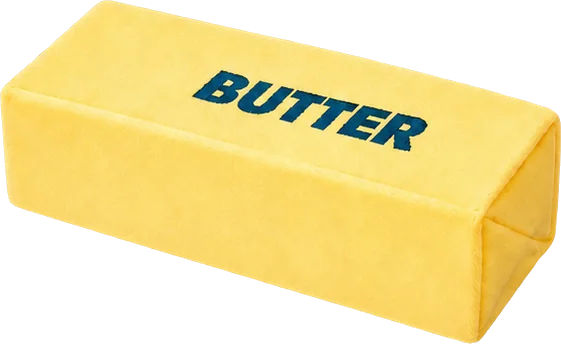
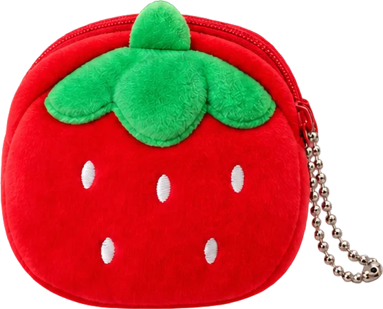
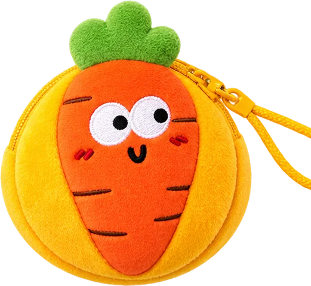
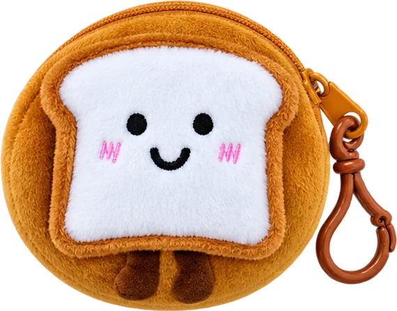

- 후면 계단 아래 카운터와 그곳의 기존 집기 유지
- 중앙 테이블과 벽면 진열 집기를 모두 버터 집기로 교체
- 상판과 하단은 동일한 사각형, 한눈에 보이는 버터 덩어리
- 아래 은색 포장지, 위로 올라온 버터가 흘러내리다 굳은 모습
- 기존 벽면 우드·조명 유지, 상단 흰 벽에 버터 드립 도장
- 별도 벽면 한쪽에 타자기·레터 작성 공간, 바로 옆 우편함
- 작성·투입·결제 후 다음날 전량 집계·타자기 인쇄·우편 발송
- 홍대·연남동 소품상점 분위기의 간판과 입구 스탠드 배너
MUMUTORI OFFLINE / DESIGN REVISION 03
팔시보에서
무무토리로.
은색 포장지에서 올라온 사각 버터.
소품을 고르고, 편지를 남기는 상점.
디자인 검토 중/오픈일 미정
01 / UPDATED DECISIONS
카운터는 그대로.
버터와 편지는 새롭게.
사용자 수정 기준 반영
제작·구매·운영 시작은 아직입니다.
- 중앙은 낮은 상품 진열로 버터 블록과 포장지의 실루엣 강조
- 은색 접힘 마감에 크림색 종이 가장자리와 작은 도토리 포인트
- 레터 코너는 옆 벽의 버터 콘솔, 우편함은 손이 닿는 인접 위치
- 정면·돌출간판·배너의 글자 기준선, 자간, 여백을 하나로 정돈
- 원고·고객 보관표·결제를 접수번호로 대조하는 방식 검토
치수·제작 재료·예산·상품 구색·오픈 날짜와 레터 규격·가격·집계 마감은 미확정입니다.
건물주 사용 동의 요청은 기존 임차인 담당입니다. 기존 임차인 지위를 유지하며 무무토리 사업장 주소를 옮기는 방향입니다. 동의와 주소 변경은 아직 완료되지 않았습니다.
INTERACTIVE SPACE / 3D
돌려 보고, 놓아 보는 무무토리.
후면 계단과 기존 카운터는 유지합니다. 은색 포장지 위 버터 집기에 실제 판매했던 소품을 놓고, 옆 벽에는 편지를 쓰는 자리와 우편함을 마련했습니다.
회전·확대로 진열과 동선을 살펴보세요. 제품 사진은 첨부한 기존 레퍼런스에서 가져왔으며, 집기·공간 비례는 실측 전 제안입니다.
02 / BEFORE & AFTER
같은 공간, 새로운 장면.
Drive ‘팔시보 스토어’ 사진 9장 확인
2026.10.03 기준 · 실측 전
실제 사진과 생성 이미지를 나란히 봅니다. 전면 유리·왼쪽 출입문·벽면 우드·기존 조명·후면 계단을 기준으로 제작했습니다. 생성 과정에서 세부 형태가 달라질 수 있으며, 3D 이미지는 사진으로 추정한 공간 관계를 보여 줍니다. 치수 도면이나 편집 가능한 3D 모델은 아닙니다.
현재의 팔시보스토어
큰 중앙 테이블, 양쪽 우드 벽, 계단 아래 카운터가 보입니다.
누가 봐도 버터인 상점
중앙·벽면은 은색 포장지 위 사각 버터. 카운터는 기존 그대로, 편지는 옆 벽에서.
간판 교체 위치 확인
정면 글자와 돌출간판을 함께 바꾸되 환기구·유리·출입문은 가리지 않습니다.
골목에서 자연스럽게 눈에 띄도록
간판의 여백과 글자 간격을 정돈하고, 입구 배너까지 크림·갈색·도토리로 연결한 제안.
진열·레터·카운터를 나눈 배치
중앙·벽면 진열 → 옆 벽에서 편지 작성·투입 → 기존 카운터 결제. 다음날 직원이 집계·인쇄·발송합니다.
사진에서 확인한 공간
- 거리에서 볼 때 왼쪽 출입문과 넓은 전면 유리
- 높게 올라오는 우드 패널과 좁은 상단 흰 벽
- 흰 레일 조명·천장형 냉난방기·노출 배관
- 후면 계단 하부의 기존 우드 카운터
- 측면 개구부, 기존 금속 진열대
벽 길이, 높이, 통로 폭과 설비 위치는 현장 실측으로 확정합니다.
A BLOCK OF BUTTER
포장지를 열자,
버터가 올라오는 모습.
상판과 하단의 사각 윤곽을 맞추고 덩어리감을 유지합니다. 녹은 표현은 두꺼운 옆면에서 시작해 은색 포장지 위로 흘러내리다 멈춥니다.
- 상판 평평한 사각형 진열면
- 몸체 연한 버터색의 두꺼운 블록과 굳은 드립
- 하단 펼친 은색 포장지, 크림·도토리 포인트 제안
- 벽면 같은 형태를 얕은 진열 집기로 적용
실제 은박 재료 사용은 미확정입니다. 손에 닿는 면·청소·내구성을 확인할 마감 샘플을 먼저 만듭니다.
CURATED LITTLE THINGS
작고 귀여운 것들을 함께.
무무토리는 다양한 사입 상품을 고르는 소품상점입니다. 기존에 판매했던 과일·채소 키링, 동전지갑, 말랑이를 버터 매대 위에 섞어 놓았습니다.




상품 사진은 다시 첨부해 주신 레퍼런스 기준입니다. 현재 재고·사입 수량·판매 가격은 별도로 확인한 뒤 준비물 관리에 반영합니다.
03 / DESIGN BRIEF
같은 버터, 다섯 가지 장면.
간판과 배너, 같은 간격과 여백
홍대·연남동 골목의 작은 소품상점처럼 따뜻하고 차분하게. 크림 바탕에 짙은 갈색 ‘무무토리’를 중심으로 도토리와 ‘소품상점’을 배치하고, 로고·글자의 기준선과 여백을 맞춥니다.
- 배너 제안
- 입구 옆 스탠드에 도토리, ‘무무토리 소품상점’, ‘편지를 남기는 곳’을 짧게 배치
- 확인할 것
- 정면·돌출간판의 실제 크기, 자간·줄 간격·좌우 여백, 환기구 간섭, 배너의 설치 위치·고정·출입 동선
- 담당·선행
- 무무토리 / 업체 미정 · 기존 임차인 동의 확인 → 실측 → 통합 시안·제작 원본 승인
상판부터 하단까지, 사각 버터
중앙과 벽면 집기를 모두 상하단이 같은 사각형인 버터 블록으로 바꿉니다. 평평한 상판 아래 두꺼운 버터 몸체가 있고, 펼친 은색 포장지 위로 흐르다 굳은 옆면을 표현합니다.
- 마감 제안
- 구조체 + 버터색 조형·도장, 접힌 포장지의 은색 마감. 종이 가장자리는 크림색과 작은 도토리로 연결
- 확인할 것
- 상하단 사각형의 일치, 진열 면적·하중·반입구·통로, 은색 접힘 모서리와 청소·내구성 샘플
- 담당·선행
- 무무토리 승인 / 제작 업체 미정 · 실측 → 형상·마감 샘플 → 도면·견적 → 제작
우드·조명·카운터는 그대로
후면 계단 아래 카운터와 기존 집기를 유지합니다. 벽면 우드와 조명도 살리고, 우드 상단의 흰 벽 안에서만 버터 드립 페인트를 적용합니다.
- 도장 제안
- 크림 바탕과 연한 버터색 무광. 실제 조명 아래에서 색과 드립 패턴을 비교
- 확인할 것
- 카운터·집기·우드·조명·바닥 보양, 벽 바탕, 드립 경계, 건조·환기
- 담당·선행
- 무무토리 / 시공 담당 미정 · 보존 범위 기록 → 도장 동의·샘플 → 보양·작업
버터를 가리지 않는 진열
중앙은 사입한 과일·채소 키링, 동전지갑과 말랑이를 낮게 놓아 버터 덩어리가 보이게 합니다. 벽면도 같은 버터 집기로 교체하고, 다양한 소품을 상품군별로 채웁니다.
- 진열 제안
- 미니어처·문구·봉제 소품과 낮은 트레이. 실제 판매 상품과 장식·샘플은 구분
- 확인할 것
- 가격표, 실제 SKU·수량, 진열 안정성, 보충 수납. 작성면과 우편함 앞을 비우기
- 담당·선행
- 무무토리 · 상품 선정 → 버터 집기와 트레이 규격 확인 → 샘플 진열
옆 벽에서 쓰고, 우편함에 남기기
별도 벽면 한쪽에 타자기와 고객 작성 공간을 둡니다. 바로 옆 우편함에 원고를 넣고 기존 카운터에서 결제합니다. 다음날 직원이 전량 집계해 타자기로 인쇄한 뒤 우편으로 발송합니다.
- 배치 제안
- 얕은 벽면 버터 콘솔 위 타자기·작성 도구·규격 안내, 손이 닿는 옆 위치에 우편함
- 확인할 것
- 장비·한글·급지 시험, 종이 규격·글자 수·가격, 원고와 결제 대조, 수거·집계 마감·휴무일·발송 절차
- 담당·선행
- 무무토리 · 장비·규격 시험 → 벽면·우편함 실측 → 다음날 처리 모의 시험 → 안내판
LETTER SERVICE / CONFIRMED FLOW
오늘 남긴 편지,
다음날 타자기로.
고객은 원고를 남기고 결제합니다. 직원은 다음날 전량 집계해 인쇄·우편 발송을 진행합니다.
- 01 · 고객
규격에 맞게 작성
벽면 작성 공간에서 안내된 양식으로 편지를 작성합니다.
- 02 · 고객
옆 우편함에 투입
작성한 원고를 바로 옆 우편함에 넣습니다.
- 03 · 고객
카운터에서 결제
기존 카운터에서 레터서비스를 결제합니다.
- 04 · 다음날 직원
전량 수거·집계
접수분을 모두 집계하고 원고와 결제 내역을 맞춥니다.
- 05 · 직원
타자기로 인쇄
정해진 규격으로 인쇄하고 내용·봉함 상태를 확인합니다.
- 06 · 직원
우편으로 발송
발송 정보를 확인해 우편 발송하고 처리 상태를 남깁니다.
원고와 결제를 같은 번호로
원고·고객 보관표·결제 기록에 동일한 접수번호를 쓰는 방식을 검토합니다. 다음날 미결제·중복·취소 원고를 구분하기 위한 제안이며 아직 채택 전입니다.
규격과 처리 기준
용지 크기·글자 수·가격·집계 마감·휴무일 처리·발송 서비스와 요금 구조는 실제 타자기 시험과 운영 검토 후 정합니다.
이 페이지는 공간과 운영 준비를 관리합니다. 실제 고객의 편지 본문이나 수신주소를 입력하는 접수 화면은 별도로 만들지 않았습니다.
04 / BRAND SOURCES
현재 홈페이지에서 가져온 기준.
도토리 로고 · 원본 일치 확인
2026.10.03 홈페이지가 사용 중인 이미지와 Drive ‘무무토리로고.png’의 픽셀을 대조해 동일함을 확인했습니다. 과거 Illustrator 파일은 최신 제작 원본으로 채택하지 않았습니다.
홈페이지 소품상점 배너의 따뜻한 우드와 귀여운 미니어처를 분위기 기준으로 사용합니다. 배너 속 상점은 실제 팔시보 사진이 아닙니다.
홈페이지 색상과 공간의 버터색
앞의 세 색은 현행 홈페이지 설정에서 확인했습니다. 마지막 버터색은 도료 샘플용 제안입니다.#EFE9E4
기본 배경#6A3906
기본 글자#FDE9BE
보조 바탕#EBCF79
버터 제안
기본 배경#6A3906
기본 글자#FDE9BE
보조 바탕#EBCF79
버터 제안
상품 확인 범위 홈페이지의 바이올린 미니어처와 첨부 레퍼런스의 기존 판매 소품 16종을 확인했습니다. 과일·채소 키링, 동전지갑, 버터 말랑이를 진열 예시로 반영했습니다. 현재 재고·사입 수량·가격·최종 오프라인 판매 구성은 별도로 확인합니다.
준비 기록 체크리스트와 메모는 이 브라우저에 저장됩니다. 중요한 기록은 JSON 파일로 내보내 보관하세요.
이 브라우저에서 준비 기록 이어쓰기
체크리스트·준비물·메모는 이 브라우저에 저장됩니다.
다른 기기로 옮기거나 이전 페이지 기록을 이어 쓰려면 준비 기록을 JSON으로 내보낸 뒤 이 페이지에서 가져오세요. 기기 간 자동 동기화는 아직 연결하지 않았습니다.05 / ACTION CHECKLIST
담당과 순서를 확인하며.
실제로 끝낸 항목만 체크합니다. 운영 방식이 바뀐 레터 준비·설치·모의 시험은 새 항목으로 다시 확인합니다.
06 / PREPARATION LIST
공간을 채우는 것들.
상품·장식·진열·가구·편지 장비·포장재·시공 준비물. 제안 품목은 선정 후 준비합니다.
견적·구매 완료는 가정하지 않았습니다.
07 / SEQUENCE
날짜보다 먼저, 준비 순서.
08 / PROJECT NOTE
다음 결정에 필요한 것.
발주·시공 전에 확인할 항목입니다.
- 간판 규격, 공간 치수, 반입구와 통로 폭
- 테이블·간판·도장에 사용할 예산 범위
- 타자기 장비·편지 규격·글자 수·가격·집계 마감·휴무일·발송 방식
- 실제 판매 상품과 초도 재고
- 작업 가능 일정과 오픈 목표일
지금 수치를 임의로 채우지 않았습니다. 견적·배치 결정 시점에 확인합니다.
이 브라우저에 저장됩니다.기기 이동 시 JSON 내보내기·가져오기
기존 초안의 JSON도 가져올 수 있습니다. 페이지 주소가 바뀌면 기존 기록은 자동으로 이동하지 않으므로, 이전 페이지에서 내보낸 JSON을 가져오세요.
09 / NEXT REVISION
다음 수정도,
이 기준에서 이어서.
프롬프트를 복사해 다음 대화에 붙여 넣으세요. 바꿀 부분을 아래에 적으면 복사할 때 함께 붙습니다.
확정 사항을 유지하며 이미지와 페이지를 함께 수정하도록 정리했습니다.
이미지를 다시 만들 때는 원사진·현행 로고·이 페이지의 최신 시안을 함께 첨부하세요. 실제 생성에 사용한 프롬프트는 이미지 프롬프트 파일에서도 확인할 수 있습니다.